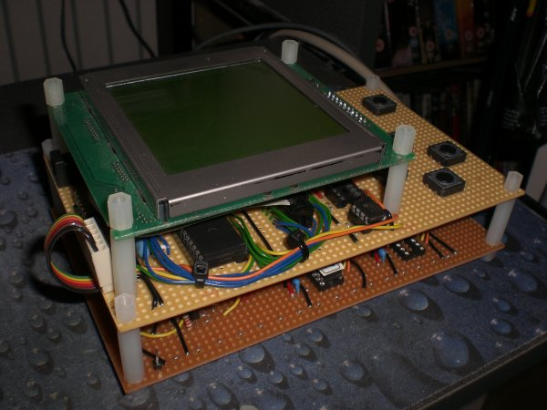
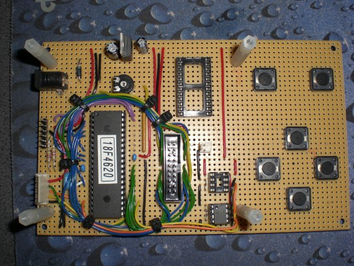
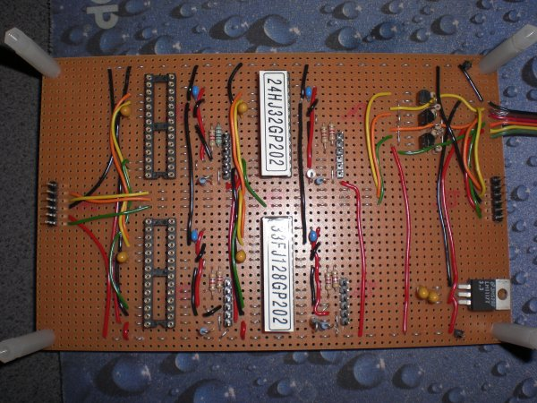

Miranda is an on-going project to create a chess computer using standard microcontrollers and components I found on eBay. The idea is to use multiple slave processors to perform the move analysis under the direction of a master processor that manages the display and user interface. By using a number of coordinated processors it should be able to perform a reasonably deep search.
I don't expect Miranda to reach the same level as the top PC chess programs like Fritz, Crafty or Shredder (my processors are only 40 MIPS and have very little memory) but I would like to be able to give some stand alone chess computers a good trashing.
The project was inspired by e-mail discussion I had with International Chess Master David Levy while trying to help him find some 6502 programmers for his electronic game business.
The picture below shows the current state of the prototype.
Miranda comprises of two stacked veroboard cards with a 128x128 graphical LCD module on top. The topmost card is manages the display and all the communication while the lower one supports the slave engines.
The master card is uses a Microchip 18F4620 device. The buttons on the right side allow the user to select pieces and enter moves. The 20-pin ribbon connector in the middle provides the data and control connections to the GLCD. The smaller 2 pin connector next to it goes to the GCLD's back light.

In the top left corner is a simple 5V regulator designed to take 9-12V DC via the power socket.
The two 8-pin DIP sockets (bottom centre) are for I2C flash memory chips. These will be used to hold a database of opening moves.
The lower connector on the left hand side is used to connect the master and slave cards. The 6 pin header above it is for a Microchip PICKit2 programmer.
The empty socket (top middle) is for an FTDI UM232 USB/Serial adapter to allow Miranda to be connected to a PC for communication and power. This will be connected to the master processor's USART pins eventually
The slave card is designed to hold up to four dsPIC processors. The prototype only has two fitted at present. Each processor socket has its own 6-pin programming header to its right. The connectors on the left and right sides allow me to connect a protocol analyser to the communication bus at either 5V (right) or 3V3 (left) levels.

As these dsPIC devices operate at 3V3 there is another power regulation circuit in the bottom right corner and three MOSFETS in the top right are used to perform bidirectional level conversion (3V3 <-> 5V) on the communication signal lines.
I had to put this project on hold in 2008 but hope to get back to it soon. At the time I put it away in bubble wrap its state was:
The master card works nicely although I have not yet completed the wiring for the USB adapter. Its not needed yet so it can wait a while.
The slave card has a problem with its level converter circuit. I used the wrong MOSFETs and the signals are not properly adjusted. Hopefully I now have the right ones but I haven't have the time to install and test them.
Update:
It now seems I don't have to do the level conversion on the I2C pins - its was a mistake in the datasheet. If this is the case then the MOSFETs can be removed entirely but I will have to rewire one of the connections used to signal back to the master as its currently connected to a 3V3 only pin.
All of the firmware is written in assembler. I tried writing some of the code in C to see how efficient the generated code would be but it was significantly bigger and slower then my handcoded version so I sticking with the assembler version.
I've written a few pieces of the master control program but have not joined it all up yet. The interface to the GLCD is working and can display a populated chess board. There are routines in place to generate move lists and manage parts of the user interface.
I want to write a simple cooperative task scheduler so that the different functions of the master can be written as tasks coordinated via some global variables and semaphores rather than as a monolithic state machine. This will make it easier to adjust its operation later.
I've also made a start on the slave device including its communication routines and move generation but this is not as far along as the master. The slave will be a much simpler application. All communication with the master will be done by hardware and managed by interrupt service routines. Once the slave has been sent a board images and a move to explore it will simply apply a search alogrithm and report periodically its progress until it either finishes the search or is told to do something else.
|
|
Contents | Next >> |
© Copyright 2009 Andrew John Jacobs. All rights reserved.
All trademarks and service marks are the properties of their respective owners.